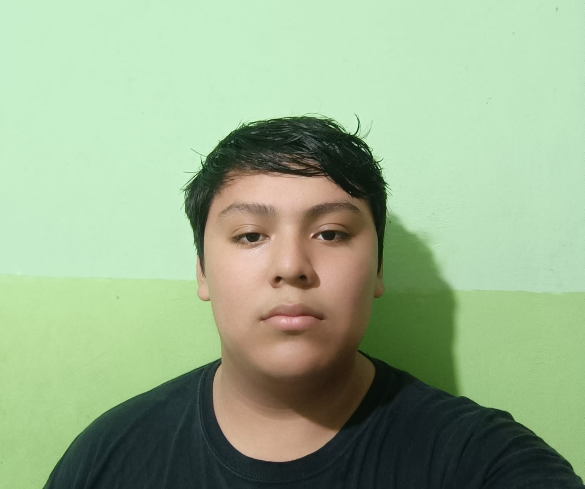
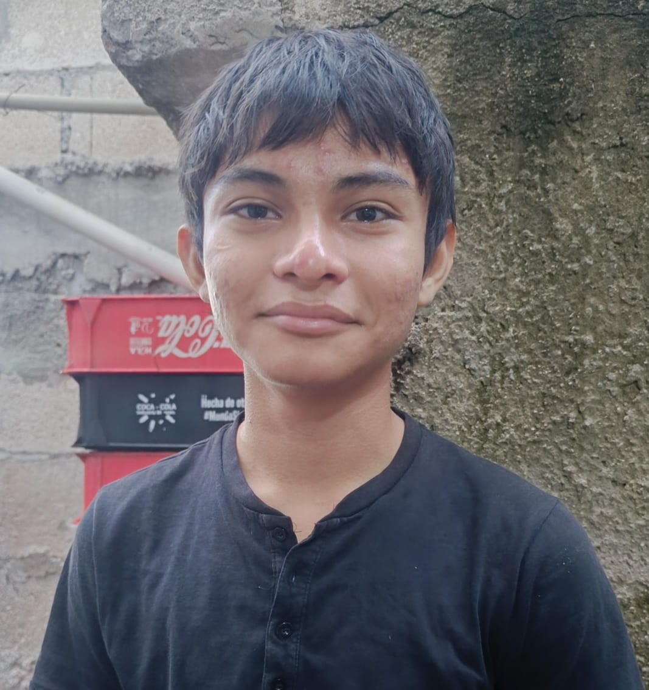

Nuestro Equipo
Conoce a las personas detrás de El Pescado Patrullero
En El Pescado Patrullero, nuestro equipo es nuestra familia. Cada miembro contribuye con su pasión, experiencia y dedicación para ofrecerte la mejor experiencia gastronómica.

Carlos Martínez
Chef Ejecutivo
Con más de 20 años de experiencia en cocina marina, Carlos es el corazón creativo de nuestro restaurante.
Lucía Rodríguez
Sous Chef
Especialista en postres marinos y platos de autor, Lucía aporta innovación a nuestra cocina tradicional.

Roberto Sánchez
Gerente General
Roberto asegura que cada detalle del servicio sea perfecto para brindar una experiencia inolvidable.